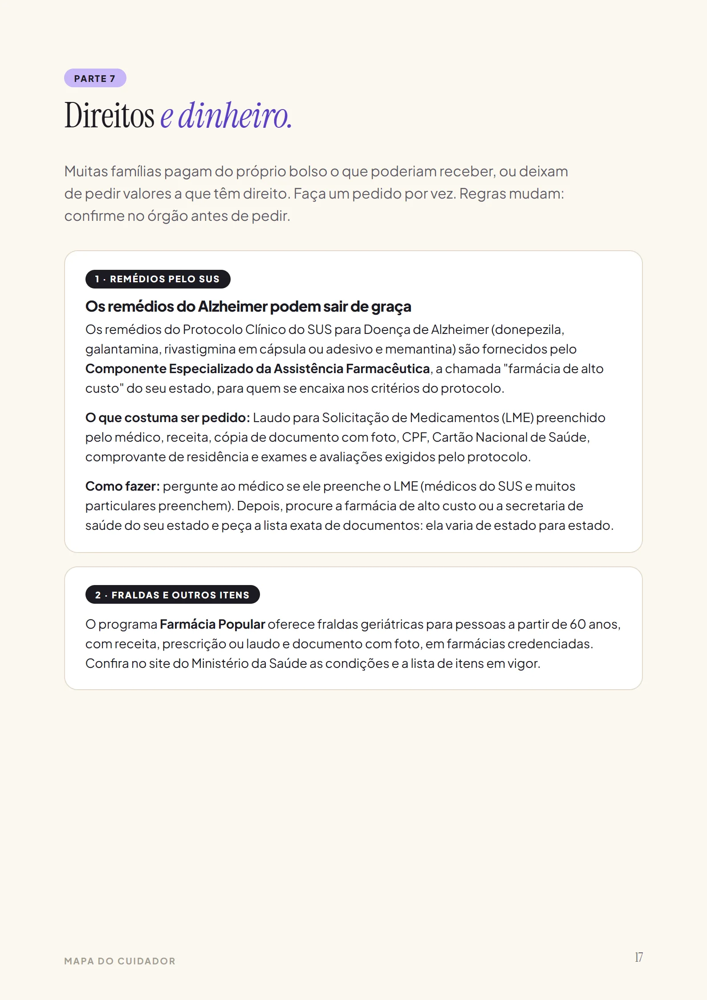
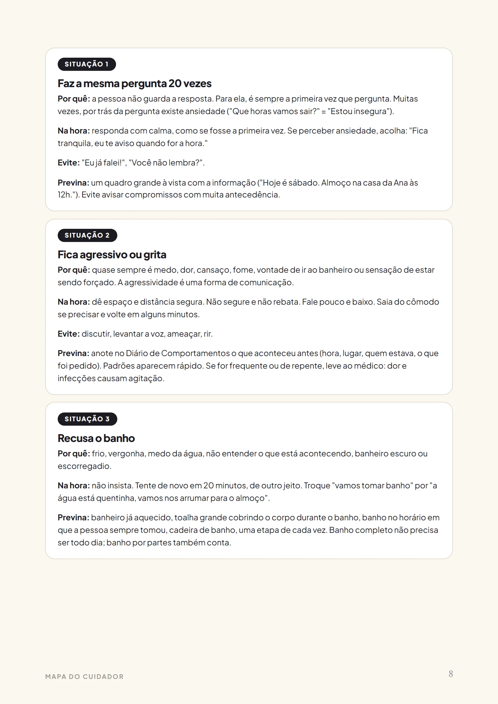
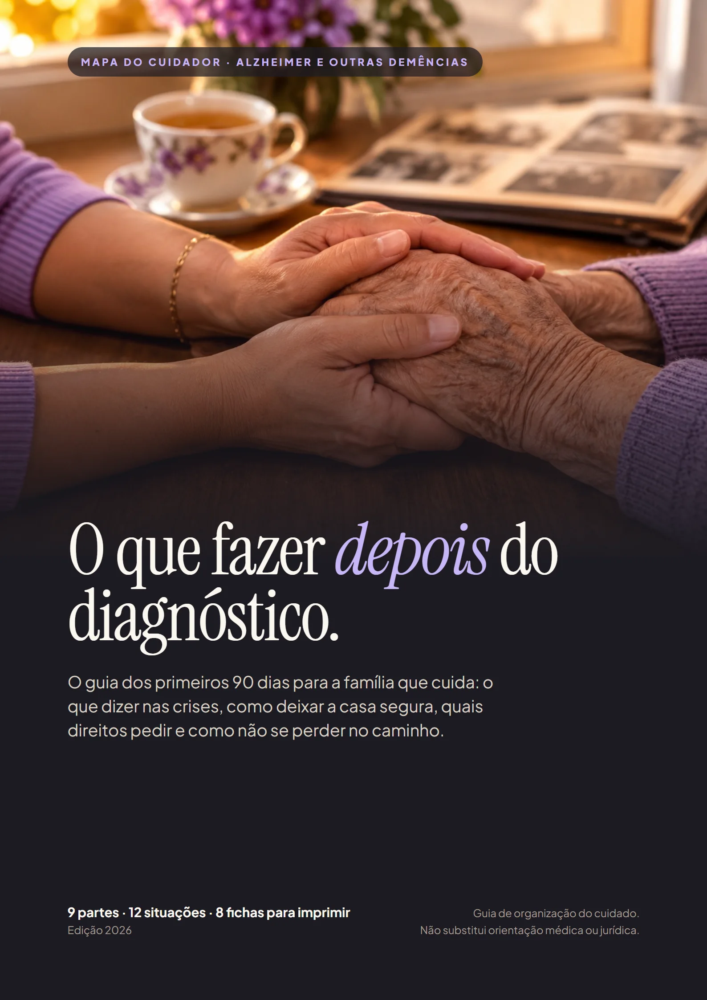
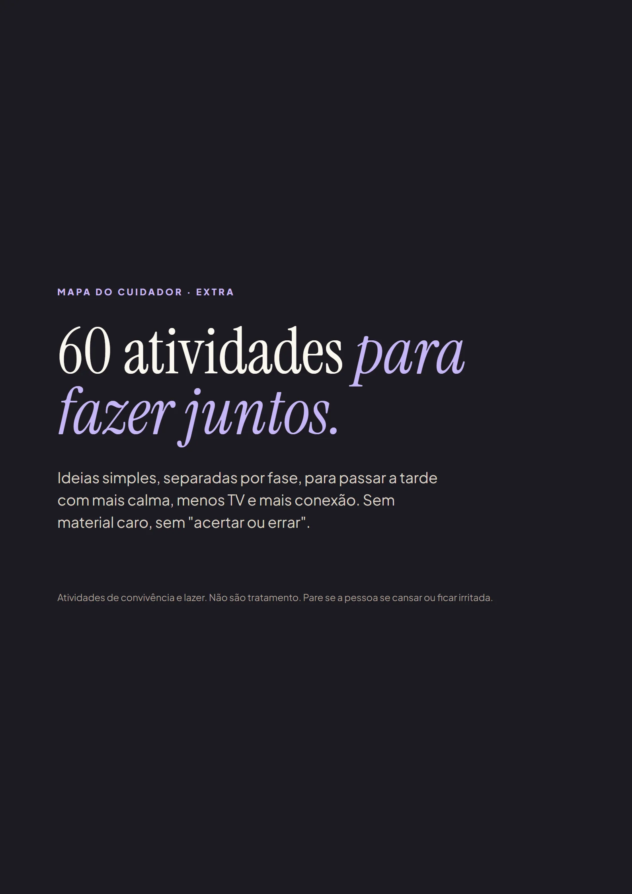

Saiu do consultório sem um plano
Uma receita, um nome de doença e nenhuma ideia do que fazer amanhã de manhã. Ninguém explica o que vem depois.
O guia dos primeiros 90 dias para a família que cuida: o que dizer nas crises, como deixar a casa segura, quais direitos pedir e como não se perder no caminho.



Mesmo quando a memória vai embora, a memória das emoções fica. É por isso que o jeito de cuidar importa tanto, e é isso que o Mapa ensina, um passo de cada vez.
Uma receita, um nome de doença e nenhuma ideia do que fazer amanhã de manhã. Ninguém explica o que vem depois.
Corrigir, explicar, discutir. Quanto mais você tenta, pior fica. E depois vem a culpa.
Quase sempre uma filha, um filho ou o cônjuge, cuidando sozinho e pagando do próprio bolso o que poderia vir do SUS.
Um checklist do que fazer agora: papéis, remédios, segurança e a conversa com a família.
12 situações difíceis, uma por página: por que acontece, o que dizer, o que evitar e como prevenir.
Fichas para imprimir e o passo a passo dos remédios pelo SUS, isenção de IR, BPC e procuração.
Este é um trecho real do Mapa. Toque numa situação comum do dia a dia.
Muitas famílias pagam do bolso o que poderiam receber. Coloque os seus números.
Em jogo no primeiro ano, com os seus números
R$ 0
Estimativa com os números que você informou. Remédios pelo SUS dependem dos critérios do protocolo; a isenção de IR depende de laudo e vale para aposentadoria e pensão; a restituição costuma alcançar até 5 anos.
Diagramado para ler no celular e imprimir em casa. Toque numa página para ampliar.
Exemplo ilustrativo. Cada pessoa reage de um jeito; o Mapa ajuda a descobrir o que funciona com a sua.
Ficha de Emergência para a geladeira, controle de remédios, diário de comportamentos, rotina, escala da família, contatos, consulta e pedidos de direitos.
Pare, Acolha, Redirecione: o que fazer em qualquer crise, numa página só, para todos da casa seguirem o mesmo jeito.
Remédios pelo SUS, isenção de IR com restituição, BPC, acréscimo de 25%, procuração e curatela, com a ordem certa de pedir.

Ideias simples separadas por fase para passar a tarde com mais calma e conexão. Aparece como opcional no pagamento; nada vem marcado.
R$27
Menos que uma consulta. Uma vez só, sem mensalidade.
Quero o MapaGarantia de 7 dias. Leia, imprima, use. Se achar que não é para você, peça o reembolso em até 7 dias e recebe 100% do valor, sem perguntas.
No pagamento, aparece como opcional o caderno “60 atividades para fazer juntos”. Nada vem marcado. Pix ou cartão; o acesso chega no seu e-mail logo após o pagamento.
Não. O Mapa organiza o cuidado do dia a dia, a convivência e a burocracia. Diagnóstico, remédios e tratamento são sempre com o médico e a equipe de saúde.
O Mapa foi organizado a partir de orientações públicas de cuidado: o Protocolo Clínico do SUS para Doença de Alzheimer, materiais do Ministério da Saúde, da Associação Brasileira de Alzheimer (ABRAz) e da Alzheimer's Association, e da legislação federal sobre direitos. As fontes estão citadas no próprio guia.
Sim. As situações do dia a dia (repetição, agitação, recusa de banho, desorientação) aparecem em vários tipos de demência. O que muda de um tipo para outro, o médico orienta.
Logo depois do pagamento, você recebe no e-mail o acesso à área de membros da Kiwify com o PDF para baixar, ler no celular e imprimir quantas vezes quiser.
Não. É um guia prático em PDF, feito para consultar rápido na hora em que você precisa, sem horas de aula.
Os direitos do guia são federais e valem no Brasil todo. A lista exata de documentos da farmácia de alto custo varia por estado, e o guia explica onde confirmar.
Você tem 7 dias de garantia. Se achar que não é para você, pede o reembolso pela própria Kiwify e recebe 100% do valor.
Pode imprimir quantas vezes quiser e usar com as pessoas que cuidam junto com você.
Pagamento único · garantia de 7 dias · acesso na hora